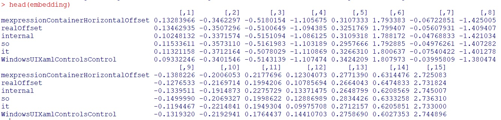

###########Text Vectorization in R######### Text vectorization is an important step in natural language processing. Machine learning systems need inputs as matrices representing texts to be numeric values. There are three common ways to convert text into a numeric matrix when the development IDE is based on R. Text Vectorization in R 1. Index-based Vectorization Indexing can be performed with some rules as given below. This method is simple yet effective when the dimensions are configured well. “my_fun” function creates new index values, and threreby compares the original vector indexes. my_fun <- function(vec, indices) { vec[indices == 1] <- vec[indices == 1] + 5 vec } original_vector <- c(2, 2, 2, 3) indices <- c(1, 0, 0, 1) mapply(my_fun, original_vector, indices) The output: [1] 7 2 2 8 2 Count Vectorizer Bag-of-words models are preferred in count vectorization. The idea is to count the number of unique words and their frequency in a specific text. But in this case, the sparsity of the training matrix creates an overload in the computation. R Superml provides us to perform count vectorization as below: library(superml) sents <- c('chair desk table', 'first you get the Money then you get the power//// ', 'how does it work', 'transform your work and go work again', 'home is where you go from to work') n <- 10 sents <- rep(sents, n) length(sents) cfv <- CountVectorizer$new(max_features = 10, remove_stopwords = FALSE) cf_mat <- cfv$fit_transform(sents) head(cf_mat, 3) The output: work you the go get your where transform to then [1,] 0 0 0 0 0 0 0 0 0 0 [2,] 0 2 2 0 2 0 0 0 0 1 [3,] 1 0 0 0 0 0 0 0 0 0 3. Word2Vec It was originally developed by a team from Google in 2013. Word2Vec9 consists of two-layers of neural network that converts text to a numeric data frame. In that way, the prediction can be performed based on word-word or matrix-matrix depending on the design of the experiment.
The code given below creates an embedding matrix from the text by utilizing a data set namely brussels_reviews. The ultimate output of the model can be further used to predict a specific word or matrix. You can look “word2vec” R library to delve into that topic. library(udpipe) ## Take data and standardise it a bit data(brussels_reviews, package = "udpipe") x <- subset(brussels_reviews, language == "nl") x <- tolower(x$feedback) model <- word2vec(x = x, dim = 15, iter = 20) emb <- as.matrix(model)
